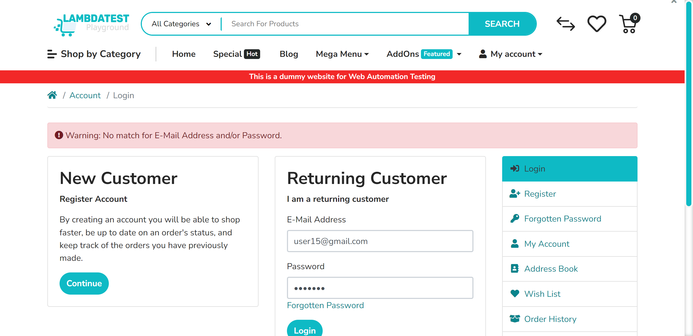

-
Login Data Driven with Excel
12:45:47 PM / 00:01:01:728 Fail
Login Data Driven with Excel
09.08.2024 12:45:47 PM 09.08.2024 12:46:48 PM 00:01:01:728 · #test-id=1FailLogin Data Driven ExcelFailLogin Data Driven ExcelGiven the user navigates to login pageThen the user should be redirected to the MyAccount Page by passing email and password with excel row "1"hooks.Hooks.addScreenshot(io.cucumber.java.Scenario)Login Data Driven ExcelFailLogin Data Driven ExcelGiven the user navigates to login pageThen the user should be redirected to the MyAccount Page by passing email and password with excel row "2"hooks.Hooks.addScreenshot(io.cucumber.java.Scenario)FailLogin Data Driven Excelhooks.Hooks.setup()Given the user navigates to login pageStep skippedThen the user should be redirected to the MyAccount Page by passing email and password with excel row "3"Step skippedPassLogin Data Driven ExcelGiven the user navigates to login pageThen the user should be redirected to the MyAccount Page by passing email and password with excel row "4"FailLogin Data Driven Excelhooks.Hooks.setup()Given the user navigates to login pageStep skippedThen the user should be redirected to the MyAccount Page by passing email and password with excel row "5"Step skipped
-
org.openqa.selenium.remote.UnreachableBrowserException
2 tests
org.openqa.selenium.remote.UnreachableBrowserException
2 failedStatus Timestamp TestName Fail 12:46:22 PM Then the user should be redirected to the MyAccount Page by passing email and password with excel row "2" Login Data Driven with Excel.Login Data Driven Excel.Then the user should be redirected to the MyAccount Page by passing email and password with excel row "2"Fail 12:46:26 PM hooks.Hooks.addScreenshot(io.cucumber.java.Scenario) Login Data Driven with Excel.Login Data Driven Excel.hooks.Hooks.addScreenshot(io.cucumber.java.Scenario) -
org.openqa.selenium.NoSuchWindowException
2 tests
org.openqa.selenium.NoSuchWindowException
2 failedStatus Timestamp TestName Fail 12:46:26 PM hooks.Hooks.setup() Login Data Driven with Excel.Login Data Driven Excel.hooks.Hooks.setup()Fail 12:46:46 PM hooks.Hooks.setup() Login Data Driven with Excel.Login Data Driven Excel.hooks.Hooks.setup() -
java.lang.AssertionError
1 tests
java.lang.AssertionError
1 failedStatus Timestamp TestName Fail 12:45:55 PM Then the user should be redirected to the MyAccount Page by passing email and password with excel row "1" Login Data Driven with Excel.Login Data Driven Excel.Then the user should be redirected to the MyAccount Page by passing email and password with excel row "1"
Started
Sep 8, 2024 12:45:46 PM
Ended
Sep 8, 2024 12:46:48 PM
Features Passed
0
Features Failed
1
Features
Scenarios
Steps
Timeline